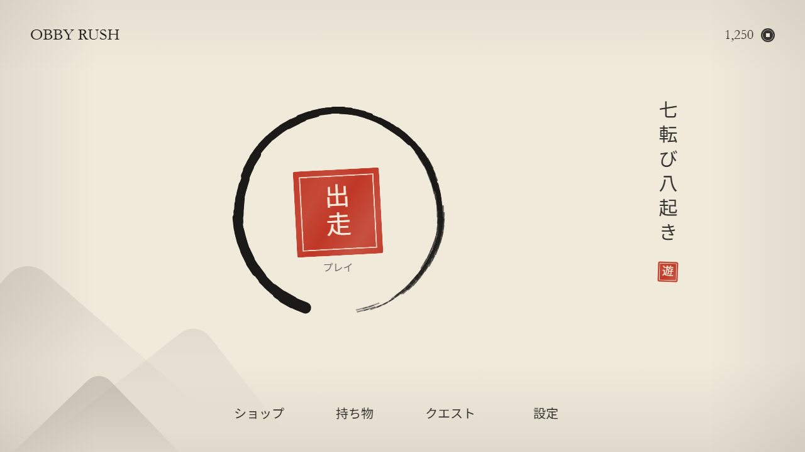
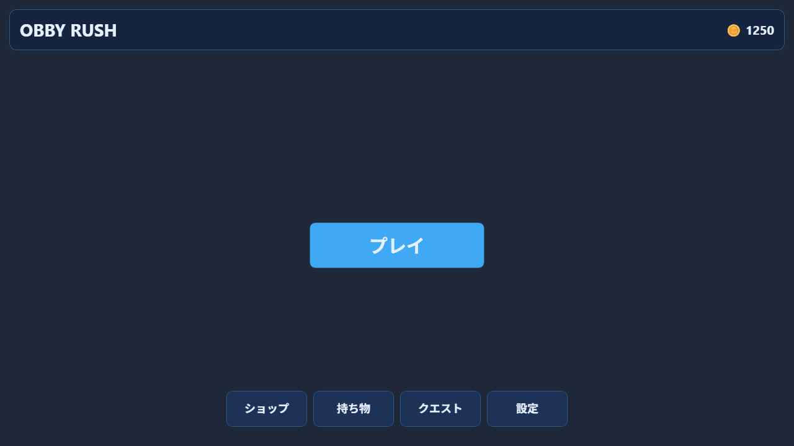
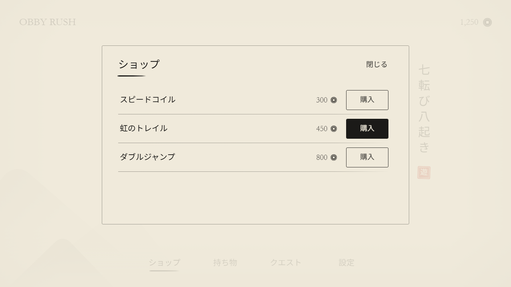
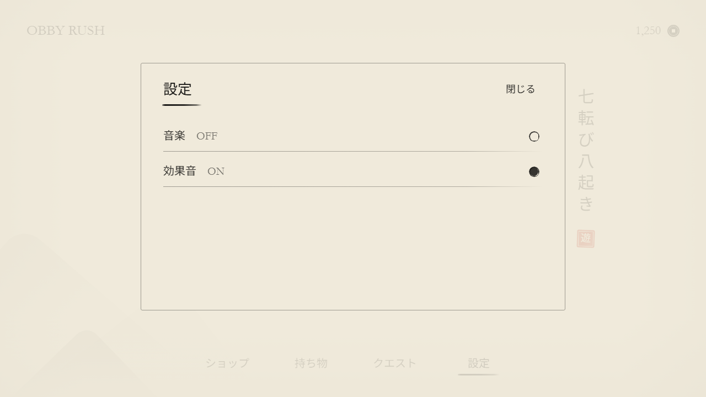
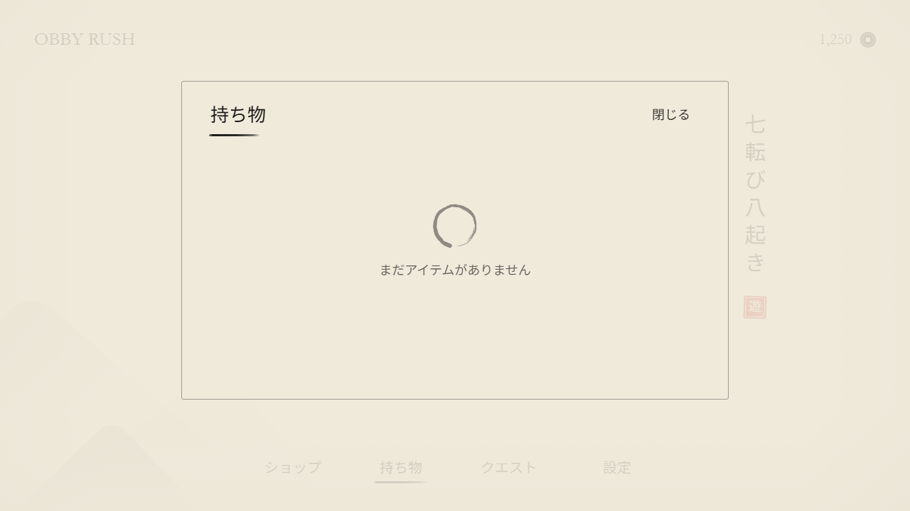
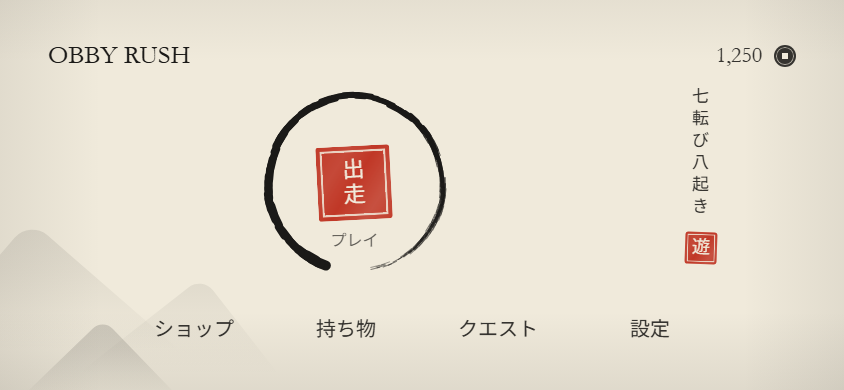
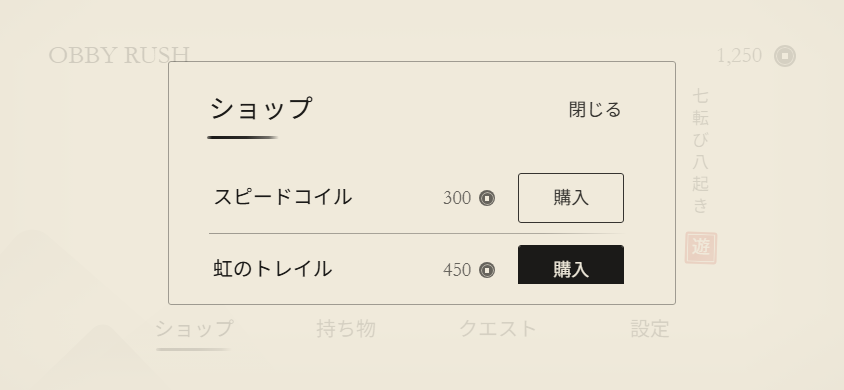

OBBY RUSH — 水墨画と書のメインメニュー
墨・和紙・朱の三色だけ。朱 は落款（印）にしか使わない。
画像はすべて実際の MainMenu.build をテスト用モックで実行し、その結果のインスタンス木をレイアウトして描いたもの。

変更前 → 変更後

状態



スマホ横向き（844×390）


色と墨の濃淡
和紙 240,234,219
墨 27,26,24
朱 192,55,38（印のみ）
焦墨 0
濃墨 .12
中墨 .35
淡墨 .62
清墨 .88
灰色は一つも定義していない。灰色に見えるものはすべて同じ墨を和紙に重ねた透明度（墨の濃淡）でできている。
全レンダリングの全画素が和紙・墨・朱の三色が作る色の三角形の内側にあることを検査済み（_preview_tools/verify_palette.py）。
変更前の画面は同じ検査で 100% 不合格になるので、検査が色の混入を見逃さないことも確かめてある。